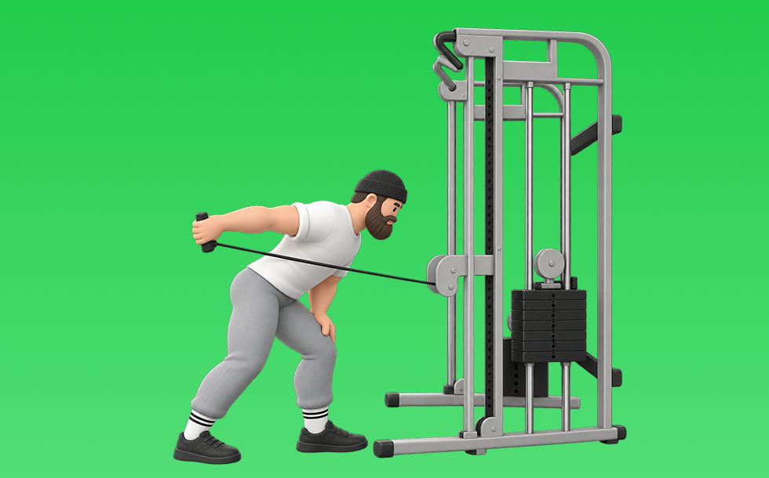

ケーブルトライセプスキックバック

ケーブルトライセプスキックバックとは、ケーブルを使って「動かす」動作で腕（上腕三頭筋）を鍛える種目です。可動域全体で張力が抜けにくいのが特徴で、反動を抑えてコントロールしながら反復します。二の腕の厚みづくりやプレス系の補強が期待できます。
- 対象部位
- 腕
- 器具
- ケーブル
- 記録形式
- 重量・回数
- 別名
- ケーブルキックバック
YouTube動画
-
【美二の腕】ケーブルトライセプスキックバック【解説】
-
ロープを使って上腕三頭筋を鍛えましょう。ケーブルキックバック
-
【筋トレ】キックバックを山本義徳先生が実演！
-
【初心者向け】トライセプスキックバック の正しいフォーム
-
ケーブルキックバック（Cable Kickback）のやり方と基本フォーム
-
2分で分かるキックバックのやり方【筋トレ初心者向け】
-
【トライセプスキックバック】三頭筋長頭に確実に効かせるコツ〜重量設定まで解説
-
【上腕三頭筋をダンベルで鍛える】『トライセプスキックバック』のやり方・コツ・注意点 |
-
『ケーブルトライセプスエクステンション(ワンアーム)』の正しいフォーム・やり方をご紹介！
-
効かないフォームを極める！(アップライトロー、トライセプスキックバック)【筋トレ】
-
ケーブルマシン(トライセプスプレスダウン)(ケーブルバックキック)
-
ケーブルバックキック
-
【腕トレ】ダンベルキックバックで上腕三頭筋を太くする方法
-
【ケーブルマシン】女性が知りたいお尻・二の腕・背中 使い方4選！
-
キックバックの正しいやり方｜二の腕を引き締めたい方にオススメ！
-
上腕三頭筋の種目トライセップスキックバックのやり方を解説
-
【初心者】トライセップスキックバックのやり方 | 二の腕を手軽に鍛えられる！【ビーレジェンド プロテイン】
-
二の腕筋トレ【キックバック】の間違えやすいフォーム解説
-
これだけでOK！ケーブルだけで効かせる三頭筋トレ3選
-
三頭筋の筋肥大に最も良い種目は？【上腕三頭筋のティアリスト】
YouTubeショート
-
【ダンベルキックバック】これ見るだけでフォーム攻略 #ダイエット #トレーニング #二の腕痩せ #二の腕引き締め #二の腕トレーニング
-
【FW】トライセプスキックバック
-
#ケーブルストレートキックバック#ケーブルトレーニング#臀筋トレ
-
持田選手（おかずもち）に上腕三頭筋を大きくするためのキックバックについてレクチャーしていてもらいました！#筋トレ #volix #ちょこっと惜しい #腕トレ #上腕三頭筋
-
【二の腕】ダンベルキックバック#shorts
-
正しいケーブルプレスダウン4つのポイント #筋トレ
-
【よくある間違いキックバック】 #ダイエット #筋トレ #新座市 #志木市 #朝霞市 #キックバック
-
ダンベルキックバック(Dumbbell Kickback)のやり方とフォーム
-
上腕三頭筋5種目目 ケーブルキックバック7.5kg【IRONPARK大滝】 #shorts #筋トレ #キックバック ＃上腕三頭筋
-
Cable Kickback🍑Manual Resistance🔥ケーブルキックバック🏆
-
トライセプスキックバックの動作
-
#shorts 【トライセプスキックバック】アラフィフ！
-
上腕三頭筋を最大限鍛える方法【筋トレ】
-
今さら聞けないケーブルプッシュダウンのやり方説明してるで‼️#トレーニング #パーソナルトレーニング #フィットネス #筋トレ #プロテイン #ワークアウト #腕トレ #三頭筋
-
先生! 腕が太くなるおすすめの種目は？ ＃Shorts #助けて山本先生 ＃筋トレ大学
-
みなさんはプレスダウンどのようにされてますか？？今回は持田選手がプレスダウンを伝授！次はどの種目の解説をやってほしいかコメントしてね！#筋トレ #volix #トレーニング #ちょこっと惜しい
-
キックバック︰上腕三頭筋のトレーニング(二の腕の引き締めに効果的)
-
dumbbell triceps kickback トライセプスキックバック #tricepsworkout #三頭筋 #canoesprint #カヌースプリント
-
【ダンベル】極太の腕を作る最強三頭筋トレーニング4選！ #shorts
-
Cable Tricep kickbacks #fitnesstips #triceps #gymtip #tricepsworkout #tricepsexercise #hypertrophy
-
ケーブルヒップエクステンション（Cable Hip Extension）のやり方とフォーム
-
【筋トレ解説】お尻を鍛えてヒップアップ！バックキック解説！
-
【ジムにこういう奴おらん？】使用中のケーブルマシンの片側を無言で使う奴
-
持田選手直伝のフレンチプレス。実はフォームが大事 #トレーニング #筋トレ #volix
-
それ二の腕痩せ出来ません！正しい二の腕を細くする方法をマスターしましょう！#ダイエット
-
【自宅で全身鍛える】初心者向けレジスタンスバンド5種目トレ #筋トレ #自宅トレーニング #筋トレ初心者
動作方法
- 肘を固定し、肩の力みを減らす
- 狙う部位で押し切る
- 可動域を保って戻す
動作ポイント
- 肘を開きすぎない
- 肩をすくめない
ワンポイントアドバイス
- 肘の位置を固定すると狙った部位に効きやすい
- 回数を急がず、下ろし動作を丁寧に行う
目的別回数設定
目的や体力に応じた一般的な目安です。無理のない範囲で調整してください。
- 筋力アップ
- 1〜5回
- 筋肥大
- 6〜12回
- 持久力アップ
- 13〜20回
YouTube動画について
動画はYouTubeの公開情報をもとに表示しています。内容は投稿者によるもので、Biggrによる監修ではありません。
アプリを入手
筋トレやトレーニングの記録はBiggrにお任せください。今すぐ無料で使い始められます。